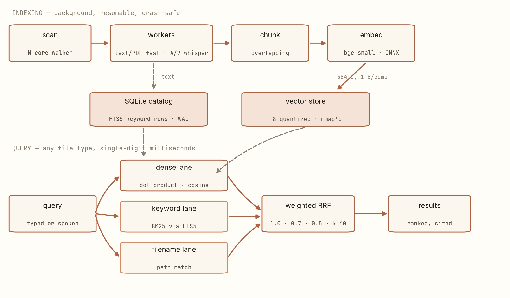
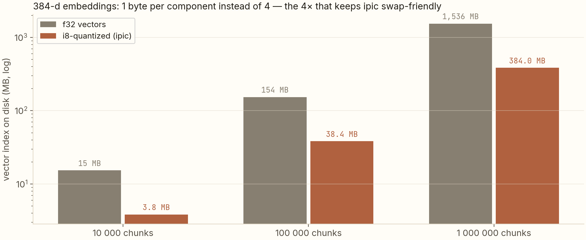

A file manager that understands your files — entirely offline.
I built a file manager where you type or say "the lecture where she explains radiation shielding" and it finds the mp4 — no cloud, no API calls, no telemetry. This is the architecture tour: every constraint, and the systems decision that satisfies it.
ipic is a fully local file manager with RAG search over everything on your disk — text, PDFs, audio, video. Three constraints shaped it: fast (single-digit-millisecond search via parallel integer dot-products), tiny RAM (embeddings stored as 1-byte components in an mmap'd file — 4× smaller than f32, near-zero resident cost), never a network call (local bge-small embeddings, local whisper transcription, a deterministic hashing fallback). The whole indexing pipeline is background, resumable, and crash-safe. This post is the tour of how those constraints were met.
What this post is about
You have thousands of files. Some you can search by name; most you can't — the thing you remember about a lecture is what was said in it, not its filename. Cloud services solve this by uploading your life to a server. On-device RAG (retrieval-augmented search, running locally) solves it without that: an indexing process reads your files, converts their content into searchable representations, and answers natural-language queries from those representations — all on your machine.
This post walks ipic's architecture end to end, organized the way I actually built it — around three constraints and one accident-recovery story:
- The shape of the system — four Rust crates, one background pipeline.
- Fast — all-core scanning and millisecond search.
- Small — i8-quantized vectors behind an mmap.
- Offline and robust — local models, and why whisper runs on CPU when the GPU is faster.
Prerequisites: general programming comfort. You don't need to know Rust — I'll define the few systems concepts (mmap, WAL, quantization) as they appear, and link my earlier posts for the deeper math.
The project behind it
ipic is open-source and runs on macOS (Apple Silicon primary) and Linux. It looks like a normal file manager — tree, filters, sorting, open/rename/trash — with one extra box: a single query field. Type or speak a natural-language query and results from text files, PDFs, audio recordings and videos are ranked together. No mode picker, no per-type flags. On my machine right now: 435 files indexed, 1,548 vectors stored, 12 cores — with typical search latency in single-digit milliseconds.
The vocabulary you'll need
- RAG (retrieval-augmented generation): find relevant content first, then use it. Here the "generation" is mostly ranking — retrieve the chunks that match your query's meaning.
- Embedding model: a small neural network (here bge-small-en-v1.5, running locally through ONNX Runtime) that turns text into a 384-dimension vector, such that similar meanings land close together.
- whisper: OpenAI's open-source speech-to-text model, compiled locally (whisper.cpp); ipic uses the 4-bit-quantized small.en variant.
- FTS5 / BM25: SQLite's full-text search module and the ranking formula it implements — classic keyword search.
- mmap: memory-mapped files — the OS lazily pages a file into memory on demand, so a large index costs RAM only for the parts you touch.
- WAL: write-ahead logging — SQLite's mode where writes append to a log instead of rewriting pages in place, so batched indexing never blocks readers.
The shape of the system
ipic is a Rust workspace of four crates, because the boundaries matter:
ipic-core (parallel directory walker, SQLite catalog, change watcher),
ipic-rag (embedders, vector store, chunker, extraction, whisper, hybrid search),
ipic-cli (headless driver), and ipic-app (the egui GUI). The GUI is
deliberately a thin shell — it talks to the same Engine the CLI drives, so the
interface is swappable without touching core logic.

The indexing pipeline, left to right: a walker fans out across all cores and batch-upserts file metadata into SQLite (WAL mode, so the catalog is readable while writes land). Then self-serving workers claim extraction jobs: text and PDF take a fast lane; audio and video queue for whisper, gated by a semaphore so transcription parallelism matches what the machine can actually feed (more on that below). Extracted text is chunked with overlap, batch-embedded, and lands as FTS5 rows plus quantized vectors.
The accident-recovery story: the whole pipeline is resumable. Every unit of work carries a state; anything interrupted mid-flight resets to Pending on the next launch and gets re-claimed. Kill the process during a 2-hour video transcription marathon, restart, and nothing completes twice and nothing is lost — the design goal was "indexing is never a ceremony."
Constraint 1: fast
Two latencies matter. Indexing throughput comes from the N-core walker and batched writes — on my 12-core machine the walker keeps every core fed. Query latency comes from the search path: the dense lane is a brute-force dot-product scan over the vector store, executed with rayon (Rust's work-stealing parallelism) over integer-friendly arithmetic. At my corpus size that scan plus FTS5 plus filename matching plus fusion lands at 4 ms — and the arithmetic of when brute force stops being enough is exactly the subject of my image-search post (short version: to ~10⁶ chunks it's fine; past that you partition).
Constraint 2: small RAM
A file manager that eats 4 GB of RAM to search your disk is a bug, not a feature. The vector store is where naive implementations blow up: f32 embeddings cost 4 bytes per component. ipic stores each component as 1 byte (i8-quantized) with a per-vector scale, cutting the index 4×, and serves it through an mmap — the OS pages in only what a query touches, so the resident cost rides the page cache instead of the heap.

The quantization math is the same affine map and s/2 error bound I derived in my INT8 post — applied to retrieval instead of convolution weights. Retrieval is friendlier to quantization than almost any workload: you're comparing directions between normalized vectors, and a dot-product over 384 components averages the per-component noise away. Recall barely moves; the RAM bill drops 4×.
Constraint 3: offline — and the CPU-over-GPU surprise
"No network calls" is a hard invariant: two models (bge-small for embeddings, whisper small.en
q5 for speech) download once, cache under ~/.ipic/, and everything after that is
fully local. If the models aren't present at all, a deterministic feature-hashing
embedder takes over — worse rankings, but search never dies.
The interesting decision inside this constraint: whisper runs on CPU by default, even though the GPU is faster. whisper.cpp keeps one mutable state per loaded model — a single stream of transcription — so GPU mode serializes all audio jobs behind one lane. The CPU path (Apple's Accelerate BLAS) transcribes at ~35× realtime, and parallelizes across workers. For a background indexer, twelve 35×-realtime lanes beat one 100×-realtime lane every time. "Fastest hardware" and "fastest system" are different claims; the semaphore in the pipeline diagram exists to enforce the second one.
What I'd do differently, honestly
- Non-speech audio is filename-only territory (music mood, ambience). The acoustic-fingerprint lane matches similar recordings, not semantics — that's stated, not hidden.
- The vector scan is brute force. Right answer at 10⁵ chunks, wrong at 10⁷ — the day it matters, IVF or HNSW slots behind the same store interface.
- Image "understanding" is filename + folder context. A local CLIP would fit the constraint set (small, quantizable, offline) — future work, and the interface is ready for it.
Reproduce
git clone https://github.com/anubhavagr/ipic
cd ipic
cargo build --release # rustup + cmake required; builds whisper.cpp
./target/release/ipic # GUI
./target/release/ipic-cli scan
./target/release/ipic-cli search "radiation shielding on mars"
./target/release/ipic-cli status
First run downloads the two local models (~250 MB); everything after is offline. Default scope
is ~/Downloads; add roots via settings or config --set-roots.
Next: three retrieval lanes, one formula → Repo on GitHub Same philosophy at work: RAG case study